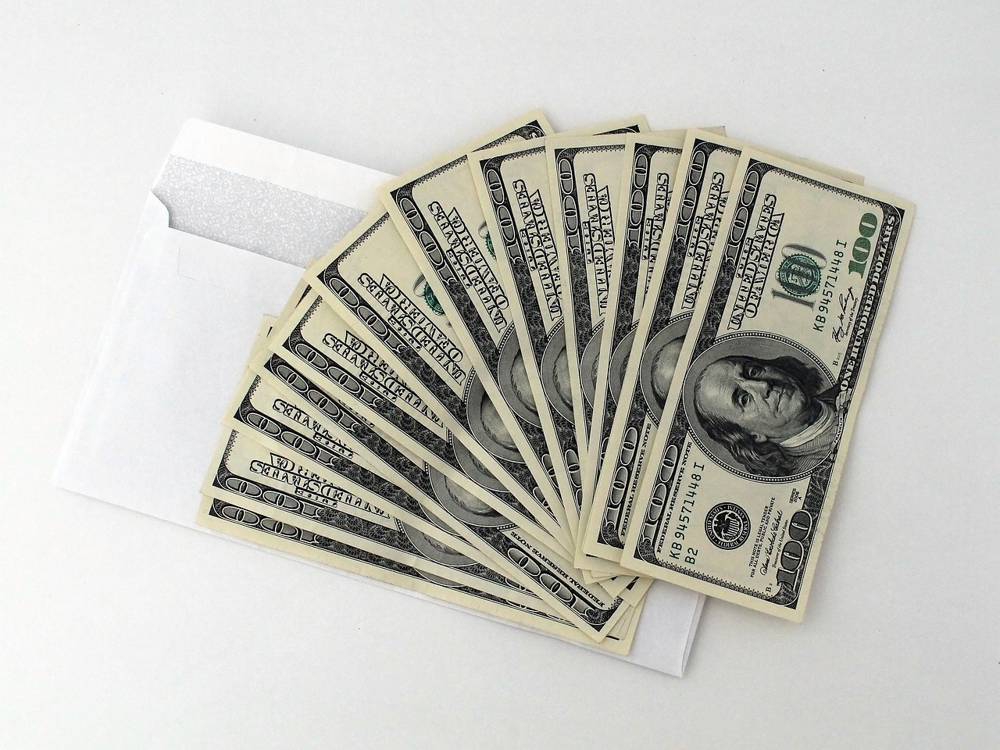
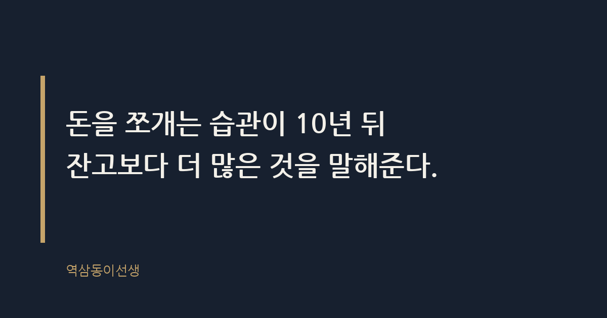

주제 사회초년생 첫 월급, 어디에 먼저 나눠야 하나 (evergreen / office)
제목 후보
메타 설명 첫 월급을 받은 사회초년생이 먼저 해야 할 일은 저축이 아니라 통장을 쪼개는 것이다. 선배가 알려주는 첫 월급 분배 원칙과 실전 비율표를 정리했다.
라벨 첫월급, 사회초년생, 재테크, 통장쪼개기, MZ소비, 짠테크, 첫월급분배방법, 신입사원재테크, 첫월급사용법, 사회초년생저축, 월급관리법
실용 자산 계산·기준 표 — 분배 비율은 숫자가 걸린 재무 주제라 검색자가 바로 적용할 수 있는 표로 제시해야 체류시간과 실용성이 올라간다
발행 전 팩트체크
이미지 (Blogger 편집기에 드래그해 넣으세요)


지난달, 입사한 지 석 달 된 후배가 점심 자리에서 수저를 내려놓더니 물었다. "선생님, 첫 월급 들어왔는데 이거 어디다 먼저 써야 해요?" 통장에 찍힌 숫자를 보고 하루 종일 설렜다고 했다. 백화점에 갈까, 부모님께 용돈을 드릴까, 적금을 넣을까 저울질하다 결국 아무것도 못 하고 점심시간이 됐다고 했다. 나는 되물었다. "그 돈, 다음 달에도 똑같은 금액으로 들어올 것 같아?"
첫 월급은 얼마를 쓰느냐의 문제가 아니라, 돈을 다루는 습관을 처음으로 설계하는 순간이다. 이 한 달의 분배 방식이 이후 몇 년의 소비 패턴을 그대로 끌고 간다. 사회초년생이 첫 월급에서 먼저 해야 할 일은 선물을 고르는 게 아니라 통장을 쪼개는 것이다.
첫 월급이란 노동의 대가를 스스로 번 돈으로 처음 받아보는 경험이자, 이후 수십 년 이어질 소비와 저축 습관의 첫 번째 데이터다. 학생 때 받던 용돈과 다른 점은 명확하다. 용돈은 누군가 정해준 한도 안에서 쓰는 돈이었지만, 월급은 한도를 스스로 정해야 하는 돈이다. 이 차이를 깨닫지 못하면 첫 월급은 순식간에 사라진다.
회사 인사 업무를 맡았을 때 신입사원 환영 간담회를 열면 꼭 나오는 질문이 있었다. "월급 받으면 뭐부터 해요?" 질문하는 사람의 표정은 늘 비슷하다. 기대 반, 불안 반. 큰돈을 처음 손에 쥔 사람 특유의 표정이다. 그 표정을 볼 때마다 생각한다. 이 질문에 어떻게 답하느냐가 그 사람의 5년 뒤 통장을 꽤 정확히 예측한다는 것을.
첫 월급을 받은 신입사원 대부분이 저지르는 첫 실수는 명세서를 안 본다는 것이다. 통장에 찍힌 최종 금액만 확인하고 끝낸다. 하지만 명세서에는 기본급, 각종 수당, 그리고 국민연금·건강보험·고용보험·소득세로 빠져나가는 공제 항목이 나란히 적혀 있다. 이 숫자를 한 번도 들여다보지 않으면, 다음 해 연말정산에서 왜 세금을 더 내거나 돌려받는지도 이해하지 못한 채 넘어간다.
세전 연봉과 실수령액이 다른 이유는 4대 보험과 소득세가 급여에서 원천징수되기 때문이다. 처음 이 차이를 체감하는 순간, 적지 않은 신입사원이 "회사가 왜 이렇게 많이 떼어가나" 하고 당황한다. 하지만 이 공제는 훗날 돌려받거나 혜택으로 돌아오는 구조다. 명세서를 읽는 습관은 돈의 흐름을 이해하는 첫걸음이고, 이 습관이 있는 사람은 이직이나 연봉 협상 때도 숫자에 밝다.
옆에서 지켜본 바로는, 첫 월급을 가장 빨리 쓰는 사람들에게는 공통점이 있다. 통장을 하나만 쓴다는 것이다. 월급이 들어오는 통장과 카드값이 빠져나가는 통장, 저축하는 통장이 전부 같다. 돈이 한 곳에 섞여 있으면 얼마가 '내 자유 소비분'이고 얼마가 '이미 쓸 곳이 정해진 돈'인지 구분이 안 된다. 잔고에 숫자가 커 보이면 마음도 커진다.
예전에 함께 일했던 신입사원 하나는 첫 월급이 들어온 다음 날 바로 노트북을 바꿨다. 월급이 300만 원 가까이 찍혀 있으니 여유가 있어 보였던 것이다. 문제는 그 다음 달이었다. 카드값과 월세, 통신비가 한꺼번에 빠져나가고 나니 통장은 거의 바닥을 쳤다. 그는 그제야 "월급이 매달 다 내 돈이 아니었구나"를 깨달았다고 했다. 이 깨달음은 보통 두 번째나 세 번째 월급쯤에 뒤늦게 찾아온다.
첫 월급에 명품 가방이나 최신 기기를 사는 이유는 거창한 보상 심리 때문이 아니다. 그 돈이 전부 '지금 써도 되는 돈'처럼 보이기 때문이다. 통장을 나누지 않으면 뇌는 그 돈 전체를 자유 소비분으로 인식한다. 행동경제학에서 말하는 심리적 회계다. 돈에 꼬리표를 붙이지 않으면 돈은 꼬리표 없이 나간다.
신입사원이 첫 월급에서 과소비를 하는 이유는 그 돈을 아직 '진짜 내 돈'이라고 실감하지 못하기 때문이기도 하다. 통장에 찍힌 숫자가 실체 없는 게임 머니처럼 느껴지는 시기다. 이 시기에 소비 패턴이 한 번 굳으면, 다음 월급부터는 그 패턴을 깨기가 훨씬 어렵다.
신입사원 교육 때마다 해주는 이야기가 있다. 로마는 하루아침에 무너지지 않았지만, 통장도 하루아침에 비는 게 아니다. 조금씩 새는 구멍이 쌓여서 그렇게 된다. 첫 월급은 그 구멍을 막는 구조를 처음으로 짜보는 연습이다.
원칙은 간단하다. 월급이 들어오자마자, 쓰기도 전에 자동이체로 먼저 빠져나가게 만드는 것이다. 통장 쪼개기란 월급을 목적별로 나눠 각각 다른 계좌로 자동 이체되게 설계하는 장치다. 저축은 '남으면 하는 것'이 아니라 '먼저 떼어놓는 것'이어야 한다. 저축은 남으면 하는 것이 아니라 먼저 떼어놓는 것이다. 남는 돈으로 저축하려는 사람은 평생 남는 돈을 본 적이 없다.
이 원칙을 지킨 후배들의 2~3년 뒤 모습을 보면 확실히 다르다. 소득이 비슷해도 비상금 통장이 쌓여 있는 사람과, 매달 카드값에 쫓겨 적금을 깨는 사람이 갈린다. 그 갈림길은 입사 첫 달, 월급이 처음 들어온 그 순간에 이미 시작됐다.
정답이 정해진 공식은 아니지만, 재무 상담에서 공통적으로 권하는 틀이 있다. 아래 표는 그 틀을 참고해 사회초년생이 바로 적용할 수 있게 정리한 예시다. 금액보다 비율의 개념으로 보는 게 중요하다.
| 항목 | 추천 비율(예시) | 이유 |
|---|---|---|
| 비상금·저축 | 50% 내외 | 이사, 경조사, 공백기 등 갑작스러운 지출에 대비하는 안전판 |
| 부모님 선물·용돈 | 10% 내외 | 금액보다 '첫 월급을 나눴다'는 의미가 더 크게 남는다 |
| 자기계발 | 10% 내외 | 자격증, 책, 강의처럼 다음 월급을 키우는 데 쓰는 돈 |
| 자유 소비 | 20~30% | 스스로 번 돈으로 누리는 보상, 죄책감 없이 쓴다 |
후배들이 통장을 쪼개고 나면 그 다음에 꼭 묻는 질문이 있다. "비상금은 도대체 얼마나 모아야 끝인가요?" 재무 상담에서 흔히 쓰는 기준은 생활비의 3~6개월 치다. 갑자기 퇴사를 하거나, 계약이 끝나거나, 이직 사이에 공백기가 생기는 경우를 버틸 수 있는 금액이다. 신입사원 월급으로 이 금액을 단번에 모으는 건 불가능하다. 중요한 건 금액의 크기가 아니라, 매달 일정액이 그 통장으로 흘러들어가는 구조를 만드는 것이다.
비상금 통장은 적금이나 주식 계좌와 분리해야 한다. 언제든 바로 출금할 수 있어야 비상금의 역할을 하기 때문이다. 수익률을 노리고 비상금을 투자 상품에 넣어두는 신입사원을 몇 번 봤는데, 정작 돈이 급할 때 손실을 보고 깨는 경우가 많았다. 비상금은 불리는 돈이 아니라 지키는 돈이다.
통장을 나누라는 말은 쉽지만, 막상 어디서부터 시작해야 할지 막막한 사람이 많다. 신입사원 교육 때 실제로 알려주는 순서는 이렇다.
후배들이 가장 많이 묻는 두 번째 질문이 이거다. "부모님 용돈은 꼭 드려야 해요? 얼마가 적당해요?" 금액에 정답은 없다. 다만 지켜본 바로는, 금액의 크기보다 '첫 월급을 받으면 나눈다'는 행위 자체가 더 오래 기억에 남는다. 몇만 원짜리 내복 한 벌이든, 용돈 봉투든 상관없다.
자신을 위한 소비도 마찬가지다. 첫 월급으로 평소 갖고 싶던 걸 사는 것 자체는 전혀 문제가 아니다. 문제는 그 소비가 전체 월급에서 몇 퍼센트를 차지하는지 모른 채 쓰는 것이다. 비율을 먼저 정해놓고 그 안에서 자유롭게 쓰면, 죄책감 없이 쓸 수 있다. 비율 없이 쓰면 다음 달 카드값을 보고 후회한다.
신입사원 때 통장을 쪼갰던 후배와, 월급을 한 통장에서 다 썼던 후배를 10년 뒤 다시 만난 적이 있다. 연봉은 비슷했다. 그런데 한 사람은 전세 자금을 모았고, 한 사람은 여전히 월급날이 가장 불안한 날이었다. 둘의 차이는 소득이 아니라 첫 몇 달 동안 만들어 둔 돈의 흐름 구조였다.
첫 월급에서 가장 중요한 선택이 비싼 가방이나 넉넉한 용돈이 아닌 이유는, 그 선택 하나가 몇 달 뒤 소비 습관을 바꾸지는 못하기 때문이다. 바꾸는 건 통장을 쪼개는 구조, 그 사소하고 재미없는 설계다. 돈을 쪼개는 습관이 10년 뒤 잔고보다 더 많은 것을 말해준다.
씁쓸하면서도 꽤 인상적인 사실은, 이 구조를 만드는 데 특별한 재능이나 큰 결심이 필요하지 않다는 것이다. 첫 월급날 은행 앱을 열어 계좌 세 개를 만들고 자동이체를 걸어두는 데 걸리는 시간은 10분 남짓이다. 그 10분이 10년을 가른다.
Q. 첫 월급, 전액 저축하셨나요 아니면 전부 써보셨나요?